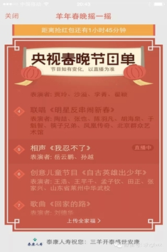
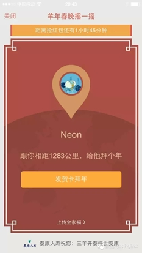
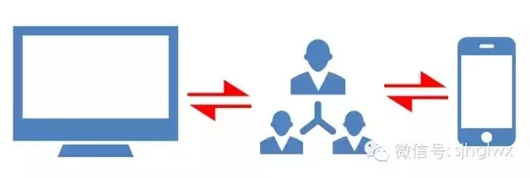

春晚摇一摇红包最可能颠覆的八大行业
年三十晚上，全国人民都在跟随着央视春晚摇动着手机。摇啊摇，有的摇出了红包，有的摇出了卡券。开玩笑的说，国家体育总局花了二十年没有搞起来的全民健身运动，微信只花了一个晚上就达到目的了。其中22:30央视春晚摇一摇送红包这波，微信总摇一摇次数达72亿次，峰值高达一分钟8.1亿次（22:34），送出红包1.2亿个，背后是牛的技术和强大的商业逻辑。
我必须要为“春晚摇一摇”点32个赞。第一是升级了红包的概念，将微信红包从用户个人行为转向为企业营销行为，商业化才是最有前途的；第二是解放了摇一摇功能，之前微信摇一摇只有单纯的摇“人”的功能，现在可以摇钱、摇礼券等；第三是拓宽了电视媒体的社交属性和内容库，如下面的三张图所示，摇一摇一键将有限的电视节目拓展到网络无限的资源中去了。老的电视媒体社交属性无外乎看电视后到社交媒体上吐吐槽，谈谈感想，属于单向连接。现在电视可以“指挥”观众，观众也可以影响节目的走势，这是双向连接。

摇出实时的节目单，丰富节目库
摇出节目明星拜年音频

摇声音模式这是第一次真正意义上实现了跨屏互动，通过微信摇一摇把电视、手机和用户连接在一起，用户体验更社交化，商业营销更场景化。电视节目是产品，摇一摇是形式，红包是催化剂。春晚摇一摇的一小步，确是很多行业的一大步，下面我就来盘点一下那些可能被颠覆的行业（按影响度相关性排序）。

第1名电视行业
互联网免费经济学中有句经典的话“羊毛出在猪身上，让牛来买单”，其实电视行业早就是这样了，观众免费看节目让广告主来买单。电视节目摇一摇发红包的组合让这种免费模式互联网化了。可以想象，以后我们看到的电视节目不只放个二维码这么简单，一定会有精心设计的摇一摇环节，可以摇出的是红包，也可以摇出节目的背景介绍，人物的背景资料，下一步剧情走势的观众调查等。整个节目内容宽度就完全被拓展开了，同时拓展的过程也是广告增值的过程。据说本届春晚导演哈文引入了根据观众掌声来判断节目效果的程序，姑且不论鼓掌的人为痕迹有多大，这算是一个进步，其实未来完全不用这么麻烦，直接用观众参与摇一摇的数据来评估就可以了嘛，而后者更真实。
如果摇一摇还能识别节目声音的话，就会驱动电视节目品牌化向主持人品牌化，主持人的声音就是标签，就是品牌，就可以搭载商业广告。
第2名收视调查行业
这种摇一摇的模式天生就是一种收视调查的工具，并且不需要样本，直接可以大数据。因为每个摇一摇用户后台数据直接可以收集到或分析出用户的地理位置、使用的手机品牌、看节目的时间长短、观众成分、对什么样的节目或片段感兴趣等等。同时由于关联到微信，用户的社交属性也可以关联起来。还有就是红包的功能，其实这又关联了用户的消费习惯。这样的收视调查数据才是立体的，才是最真实的。
第3名广告行业
微信红包本来就是一个广告平台，通过微信其实可以识别声音，这必将使原来单纯的平面广告（从某种意义来说电视广告也是“平“的）可以加速向富媒体广告发展。电视广告可以说话，楼宇广告可以说话，路边的路牌广告也可以说话，这些广告声音可以驱动用户摇一摇，摇出一个广告模式，这个模式就是广告也可以发红包了。同时广告效果监控变得容易，如果再加上Wi-Fi等手机识别技术的话，电梯、路牌这种广告也可以实现精准推送。当你走到这些广告载体身边时，它就可以单独播放一条关联度高的广告给你看，因为”广告“知道你是谁。
第4名餐饮行业
红包是一种广告载体，折扣券、优惠券、团购券、礼品券都可以装到红包里并摇出来。想吃饭时，打开手机摇一摇，周边餐厅的红包就全部摇出来了，这和你在团购网上买团购券的逻辑是不一样的，团购券是目的性消费，红包券是随机性消费，后者更容易提升消费总量。对一般的餐饮业来说，1-1.5km是营销的核心，80%的顾客来源于这个范围，搭载微信摇一摇红包可以让营销更容易，也更社区化。
消费者的消费场景是这样的：想吃饭时，首先拿出手机摇出附近的红包券或识别路牌、电梯广告声音摇出，然后到饭店消费。结账时让服务员打出消费小票，直接用手机扫一扫小票上的二维码即可完成支付，并成为饭店的会员。同时还可以在小票上获取积分或者其他优惠，下一次消费还可以有优惠。在行业里类似于象“客来乐“那种O2O解决方案已经经过了较为成熟的市场验证。对消费者而言，直接用支付宝或微信就支付了，不带钱包消费就是任性。对商家来说，这种便利及直接的营销方式，无疑会成为餐饮业不久后的未来最有效的拓客利器。
第5名传统零售业
红包会代替零售业的购物卡吗？答案是肯定的。红包时代购物卡变成多余的东西，以前是各单位发购物卡，现在直接可以发红包了，送礼也是同样的道理。
传统零售卖场内一般都会有广播，不同时段广播不同的摇一摇内容，顾客的参与感立刻就会活跃起来。有人会说，直接广告商家的折扣信息不就行了吗？为何多个摇一摇程序。这个道理就像我们不会去捡掉在地上的5毛钱，但是却会在春晚上为了抢5毛钱的红包忙得不亦乐乎的道理一样。这就是人性。
以前我们用现金消费，后来改成用银行卡刷卡消费，现在逐渐过渡到移动支付。目的都一样，适应不同时期消费者的消费习惯，消费习惯发生了改变，如果零售商不跟上这个变化，没有移动支付平台的话，消费者就变得不习惯了，顾客流失就成为必然。
红包既可以是现金，也可以是卡券等。微信春节红包中有许多商家发放的线下使用的代金券，但到了线下环境，目前绝大部分零售商收银系统是不支持这种红包支付的——核销很困难。除非是费劲地去修改POS收银程序，或者安装类似于客来乐这种“未来收银台“设备。消费者拿着手机去商场购物后，拿出手机上的优惠券或者其他卡券，到外设设备上“被扫”一下，这张卡券就被用掉了，同时完成支付、关注这家商家的微信服务号或者支付宝服务窗成为其会员。据了解，这样的消费体验并不能完全被称为“未来式”，北上广许多商场和购物中心已经有了。
第6名电视购物
现在的电视购物程序是看电视，拨打400电话，下单（观众是看不见这个下单过程的）。这种购物流程长而且体验感不好。未来的电视购物应该是这样的，电视播放购物产品，观众通过节目实时进程摇一摇，摇出一个折现金或扣券红包，点击红包直接进入购买页面下单并使用红包金额。并且还可以根据节目进度不一样，观众收到的红包金额不一样，越早金额越大。
同时，用于我们知道顾客是谁，还可以根据他以前的消费记录来给他不同金额的红包，比如忠诚度越高的顾客收到的红包越小，新顾客收到的红包越大，最终实现差异化定价。这样电视购物也可以大数据了。
第7名广播行业
本来广播行业可以排在第2名，但是考虑到目前广播行业的市场容量及走势，我把它排到第7名。前面提到的，电视节目+摇一摇+红包模式同样适用于广播，并且玩法还可以更丰富。大家还记得2014年疯狂流行的猜图游戏吗？其实我们猜的都是一些商标或品牌名，大家不知不觉的被广告了。但是由于游戏的趣味性，我们还是乐于被广告并且帮助传播广告。广播其实也可以这样玩，比如主持人说，现在我念10个品牌名称，大家摇一摇，看看哪个品牌能摇出红包来。商家展示了广告，听众得到了红包，皆大欢喜。
第8名电影制作
听声音摇红包让传说中的彩蛋变成可能，电影放映前的广告或结束前的字幕阶段都可以投放彩蛋。这个彩蛋对制作方来说既可以是一个票房调查，也可以是一个病毒传播的工具（例如摇到彩蛋可以分享给朋友）。彩蛋可以装现金，片中植入广告的礼券等，所以彩蛋对观众来说可以变成一个增值服务，并且可以转让收货的这种礼券，点赞之交不是真的社交，礼尚往来才是人脉的积累。
摇一摇背后是强大的商业逻辑，是O2O的催化剂，通过摇一摇产生大量的礼券，必然需要对应的系统或设备来充当“2”的角色，就是客来乐的解决方案及其硬件连接设备。
其实摇一摇颠覆的肯定不止这8个行业，我的文章用“颠覆”做标题的这还是第一次，细思量将颠覆替换成改变可能更好，但是为了阅读量，我也是拼了。你们在看春晚打麻将抢红包，而我却在码字。

西安新掌趣信息科技有限公司是一家新兴的移动互联网公司。
我们年轻且富有梦想，并致力于将传统广播电视行业与移动互联网进行深度结合，开启广播电视行业双屏互动新时代。
我们一方面同腾讯紧密合作、一方面同众多广播电视台紧密合作。我们汇聚了互动策划、技术研发、运营分析和等各领域的优秀人才，主创核心人员均来自腾讯、阿里巴巴、新浪、华为、中国移动等国内尖端互联网公司及知名企业，组成一只务实的精锐之师。我们拥有一支在互联网与传统广播电视行业具备丰富经验的管理团队，和一群心怀梦想，富有激情的年轻人。始终坚持以用户体验和价值为核心价值，依靠先进的技术和创意，同各方联手打造新一代网络电视广播媒体互动新天地。
- 名称：西安新掌趣信息科技有限公司
- 地址：西安市高新区科技五路20号京发大厦7层
- 邮编：710075
- 电话：029-88867788
- 邮箱：support@holdfun.cn
Copyright © 2014 - holdfun.cn All Rights Reserved
西安新掌趣信息科技有限公司 版权所有